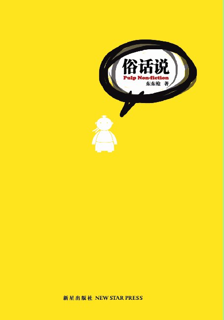

《俗话说》

总体观点
‘俗话说’不是真理指南，而是中国人左右逢源的话术盾牌：每一条流传千古的老话都有一条截然相反的老话相克，俗话的功能从不在于提供逻辑严密的公理，而在于在不同境遇下为个体的实用主义算计寻找合法性背书。
民间俗语折射出极其深沉的熟人社会博弈心理：表面上是道德教诲，底下却涌动着趋利避害、中庸自保与和稀泥的泥土智慧，构成了中国传统市民阶层的心理自愈机制。
语言的相声解构展现出独特的汉语审美弹性：东东枪将当代广告文案的精炼跳跃与北方曲艺的‘包袱’打磨无缝结合，在欢声笑语中完成了对封建说教与伪崇高的解毒。
核心观点
-
1. 俗话的互克互补：中国人永不输理的话术密码
想劝人冒险就说‘富贵险中求’，想劝人保命就说‘留得青山在不怕没柴烧’；俗话是一套完备的自圆其说弹药库。
对比‘兔子不吃窝边草’与‘近水楼台先得月’，指出人总是根据当下贪婪或胆怯的需求随心所欲调取老话为自己辩护。 -
2. 中庸自保的生存哲学：枪打出头鸟与明哲保身
漫长的历史动荡让底层平民总结出极度务实的‘缩头乌龟法则’，警惕任何过早出挑的锋芒，视平庸无为为至高生存艺术。
分析‘出头的椽子先烂’与‘木秀于林风必摧之’在职场办公室里的广泛应用，揭示传统文化对个性的系统性规训。 -
3. 人情账本的幽微天平：礼多人不怪与亲兄弟明算账
熟人社交中最复杂的莫过于送礼与求人办事；俗话既鼓励通过人情往来建立利益互锁，又在破裂时祭出严酷的契约防卫。
解析‘吃人嘴软拿人手短’背后的权力依附机制，说明每一份看似热情的农家土特产里都标好了未来要求回报的价格标签。 -
4. 情爱纠葛的市井勘误：痴心妄想与红颜祸水
民间谚语对两性关系的描述往往冷酷而刻薄，剥离了才子佳人的浪漫幻想，充满农业文明对劳动力搭配与香火延续的直白衡量。
评‘娶妻求淑女，不要娶仙女’，指出传统乡土家庭对能够踏实操持家务母性角色的渴求远胜过对纯粹审美的追寻。 -
5. 文案视角的汉语重构：在语词缝隙里打捞童真诗意
东东枪不仅是反讽，更在字里行间展现出对汉语民间方言生命力的深情热爱，每一处谐音双关都饱含着对烟火人间的体恤。
作者借‘天上下雨地下流，两口子打架不记仇’的童谣，描摹胡同老夫老妻床头吵架床尾和的质朴烟火气。
全书结构
-
第一辑：左右逢源的真理（俗话里的逻辑互掐大赏）
列举数十组截然对立的经典谚语；以幽默短打形式进行对比博弈，展现民间智慧在黑白两道之间游刃有余的滑头特质。
对仗剖析：‘好马不吃回头草’VS‘浪子回头金不换’，拆穿道德谴责往往因当事人身份与财富多寡而灵活变脸。 -
第二辑：江湖处世的防弹衣（职场与人情社交密码）
聚焦办公室、邻里与亲戚走动中的俗语套路；探讨‘面子’、‘台阶’与‘客套话’在维持熟人社会秩序中的润滑功能。
解读‘看破不说破，面子上好过’，教导读者如何在人际交往中通过留白与装糊涂避开锋芒毕露的社交雷区。 -
第三辑：风月场里的账房先生（两性情爱的世俗秤杆）
收录关于婚姻、择偶、出轨与家庭纷争的俗话解构；剥落言情外衣，展现老祖宗在男婚女嫁上精准算计的实用主义。
戏说‘嫁鸡随鸡嫁狗随狗’在现代女性独立意识下的全面破产，感叹老话也要与时俱进升级为‘自立更生走天下’。 -
第四辑：银两与柴米的冷面秤（金钱、借贷与买卖行规）
探讨民间借贷、市井买卖、讨债与发财梦中的俗语风俗；揭示金钱对传统人伦关系的残酷考验与试金石效应。
剖析‘借钱是孙子还钱是老爷’的民间普遍焦虑，呼吁大家以现代银行信用和法律抵押替代含糊不清的熟人借款。 -
第五辑：难得糊涂的人生谢幕（生死祸福与岁月感喟）
升华至人生哲学高度；品味‘听天由命’、‘人生如戏’等喟叹背后平凡百姓在面对历史沧桑与无常岁月时的豁达释然。
东东枪在卷末写道：俗话说了一辈子，到头来不过是图个‘知足常乐’；老话不可尽信，但老话里的那份热气腾腾值得我们回味。